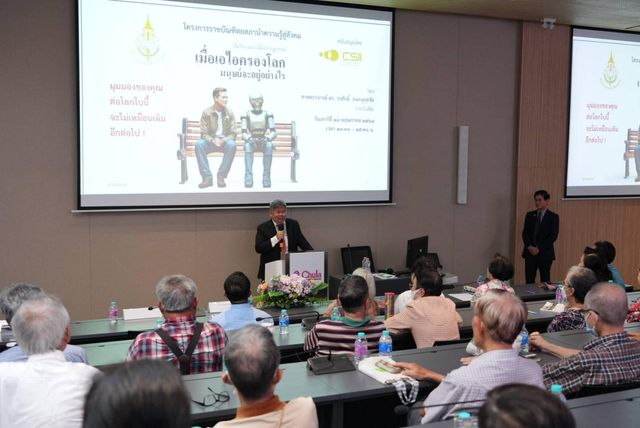

หน้าแรก
สำหรับหน่วยงานภาครัฐ
บริการตามกลุ่มผู้ใช้
สำหรับหน่วยงานภาครัฐ
ข้อมูลองค์กร ข้อเสนอต่อรัฐบาล และหลักเกณฑ์ภาษาสำหรับงานราชการ
ข้อมูลราชบัณฑิตยสภา
นายกและอุปนายกปัจจุบัน
ผู้บริหารราชบัณฑิตยสภา
สารจากนายกราชบัณฑิตยสภา
ทำเนียบนายกราชบัณฑิตยสภา
ทิศทางและการดำเนินงาน
ยุทธศาสตร์และแนวทาง
แผนผังการบริหาร
ราชบัณฑิตยสภาและสำนักงาน
อำนาจหน้าที่
ตามพระราชบัญญัติ
ข้อเสนอต่อรัฐบาล
สังคมคนไทยอายุยืน
ข้อเสนอแผนการสร้างระบบรองรับ
ความเหลื่อมล้ำ
ข้อเท็จจริงและข้อเสนอแนะเชิงนโยบาย
ภาษาและศัพท์สำหรับงานราชการ
ศัพท์บัญญัติ
ศัพท์วิชาการที่บัญญัติแล้ว
(เปิดในแท็บใหม่)
คำทับศัพท์
หลักการเขียนคำต่างประเทศ
(เปิดในแท็บใหม่)
อักขรานุกรมภูมิศาสตร์
ชื่อประเทศและสถานที่
(เปิดในแท็บใหม่)
ผู้เชี่ยวชาญและการติดต่อ
ราชบัณฑิตและภาคีสมาชิก
ค้นผู้เชี่ยวชาญตามสาขา
สำนักธรรมศาสตร์และการเมือง
สำนักวิทยาศาสตร์
สำนักศิลปกรรม
การประเมินคุณธรรมและความโปร่งใส (ITA)
การเปิดเผยข้อมูลสาธารณะ
ติดต่อหน่วยงานที่ดูแลศัพท์
กองที่ดูแลแต่ละสาขา
บริการสำหรับกลุ่มอื่น

สำหรับประชาชน
ค้นคำ อ่านความรู้ และติดตามกิจกรรมของราชบัณฑิตยสภา
สำหรับราชบัณฑิตและภาคีสมาชิก
กฎระเบียบ สมาชิกภาพ และกิจกรรมของสำนัก